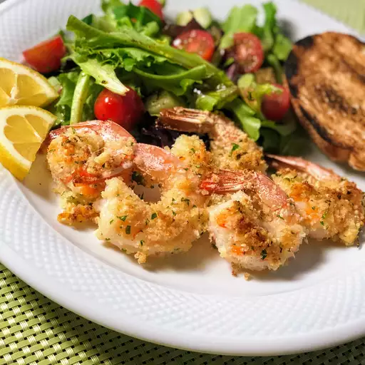

Garlic-Parmesan Shrimp Recipe

Description
Delicious crispy shrimp coated in a bread crumb-Parmesan mixture. Prep time is about 10 minutes while cook time is 20 minutes and in total takes 30 mins. This recipe takes and yields about 4 servings. This recipe utilizes bread crumbs and combines it with parmesan cheese, garlic powder, in resealable plastic bag. We shake and then add the shrimp for coating.
Add leftover bread crumbs and drizzle butter onto the shrimp. Bake in the oven until shrimp starts to crisp. Switch to broil until the coating is light brown. Enjoy!
Ingredients
- nonstick cooking spray
- 1 cup dry bread crumbs
- 1 cup shredded Parmesan cheese
- 2 tablespoons dried parsley
- 1 ½ teaspoons garlic powder
- 1 pound large shrimp, peeled and deveined
- 2 tablespoons butter, melted, or more to taste
Steps
- Preheat the oven to 350 degrees F (175 degrees C). Spray a 9x13-inch glass casserole dish with nonstick cooking spray.
- Combine bread crumbs, Parmesan cheese, parsley, and garlic powder in a large resealable plastic bag. Seal and shake to mix ingredients together. Add shrimp and shake to coat.
- Lay shrimp flat in the prepared baking dish. Sprinkle with any bread crumb mixture remaining in the bag. Drizzle melted butter over the top.
- Bake in the preheated oven until starting to crisp, 15 to 20 minutes. Switch to broil setting until topping is light brown, 2 to 3 minutes.